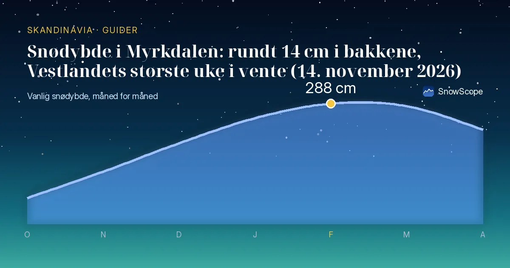

Snødybde i Myrkdalen: rundt 14 cm i bakkene, Vestlandets største uke i vente (14. november 2026)
Myrkdalen har tynn snødekning nå, med omkring 14 cm på midtbakkene og knapt 9 cm ved foten. Øverst på fjellet ved 1 067 m ligger det mer—omkring 33 cm—men dalbunnen ved bygda er nesten bar. Dette skyldes at nærmeste målestasjon, Mjølfjell ved 695 m og 32 km unna, målte 10 cm den 13. november, og målestasjonen ligger lavere enn mesteparten av Myrkdalens terreng.
Se snøprognosen for Myrkdalen direkte i SnowScope-appenSnødybde, puddervarsler og 3D-kartet, gratis.

Syv dager med kraftig snøfall fra i morgen
Den neste uken vil forvandle fjellet. SnowScope viser omkring 44 cm på toppen, 27 cm på midtbakkene, og 7 cm ved foten. De kraftigste snøfallene kommer de første to dagene: omkring 28 cm er varslet for toppen alene mellom i morgen og dagen etter.
Andre prognoser går høyere—opp til 108 cm på toppen—så dette er et forsiktig estimat. Fangsten er nullgradersgrensen, som ligger omkring 580 m. Det betyr at omkring halvparten av vannet ved foten kommer ned som regn, ikke snø. De øverste heisetrekene og løypene vil ligge godt inne i snøsonen.

Fortsatt bak, men tar igjen raskt
Den 14. november i en typisk vinter holder Myrkdalen 59 cm på toppen, 51 cm på midtbakkene, og 40 cm ved foten. Nå ligger det godt under det. Fjellet har imidlertid en god merkebok for gjenvekst. Innen 30. november når den vanlige dybden 93 cm på toppen; innen 15. desember, 120 cm. Denne kommende uken lukker mye av gapet.
En median vinter bygger opp til 319 cm på toppen ved toppen i mars, og snøen ligger omkring 265 dager. Forrige vinter endte på 227 cm—merkbar lavere enn langtidsgjennomsnittet.
Hvordan det siste mønsteret har endret seg
Over 46 vintrer med data har Myrkdalens karakter endret seg. De første 15 vintrene viste en median topp på 362 cm på toppen; de siste 15 vintrene gjennomsnittlig 282 cm. Snødager falt fra 287 til 248. Fjellet forblir en av Sør-Norges mest pålitelige, men ytterpunktene har blitt mindre vanlige.
Denne endringen speiler et bredere mønster på tvers av Skandinavia: snøen kommer senere, smelter tidligere, og de dypeste månedene er mindre ekstreme enn de var to tiår siden.
Geografien som former hvor det faller
Myrkdalens bratte høydeforskjell—621 m fra fot til topp—betyr at temperatur og nedbørstype endrer seg dramatisk over kort avstand. Atlanteren mater inn fuktighet fra vest. Nær Voss i dalen dumper luftmassen sin last som regn. Høyere opp faller det som snø. Dette er hvorfor toppen ofte fanger to eller tre ganger mer enn foten i en enkelt storm.
Nullgradersgrensen på 580 m som er varslet for den kommende uken er typisk. Den setter de nedre løypene i en regn-og-snøslabb-sone mens midtbakkene og øvre skrenter samler meter med nysnø.
Når du kan forvente best snø denne sesongen
Myrkdalens sterkeste uke i en typisk vinter er uke 12 (mid-mars), når toppen vanligvis holder 288 cm og snøen er på sitt dypeste og mest stabilt. Men det første skikkelige skistekket åpner seg mot slutten av november. Nullgradersgrensen vil stige og falle med hver storm; forvent at best riding skifter oppover og nedover gjennom sesongen.
Tidlig sesong-snø er våt og tett. Når november blir til desember, bygger basen seg opp og kulden legger seg inn.
Tips til skiløpere
- Nysnø på en tynn base og bratte bakker betyr høy snøskredvarsel: sjekk Varsom-bulletinen før du forlater merket terreng.
- Veien opp fra Vossestrand vil være våt nederst og snøfull på toppen samme dag. Kjør med forsiktighet.
- Skisteder åpner 27. november. Hvis du besøker før det, hold deg til merkede løyper; umerkede områder kan gjemme steiner.
- I de første 48 timene av prognosen ankommer omkring 28 cm på toppen. Vindeksponerte søkk og leskrenter vil være lastet.
- Basen vil forbli slåbrete og flekkvis gjennom denne hendelsen. Skied midtbakkene og øvre løypene for beste forhold.
Om tallene
Snødybdene for skistedene er det dypeste snødekket i de øvre bakkene på datoen som vises; de er anslag for et område, ikke en måling i ett punkt. Prognoser kan endre seg. Les alltid det offisielle snøskredvarselet før du kjører utenfor preparert løype.
Offisielle snøskredvarsler: Varsom (NVE)
Siter denne rapporten
For forskning, undervisning eller presse: tallene og diagrammene kan brukes fritt under CC BY 4.0 med denne kildehenvisningen.
SnowScope (2026), Snødybde i Myrkdalen: rundt 14 cm i bakkene, Vestlandets største uke i vente (14. november 2026), https://snowscope.app/blog/nb/2026/11/myrkdalen-snow-depth-14-november-2026.html, hentet 2026-11-14
SnowScope (Atlas Labs). (2026, November 14). Snødybde i Myrkdalen: rundt 14 cm i bakkene, Vestlandets største uke i vente (14. november 2026). SnowScope snow reports. https://snowscope.app/blog/nb/2026/11/myrkdalen-snow-depth-14-november-2026.html
BibTeX
@misc{snowscope2026myrkdalensnowdepth14nove,
author = {{SnowScope (Atlas Labs)}},
title = {Snødybde i Myrkdalen: rundt 14 cm i bakkene, Vestlandets største uke i vente (14. november 2026)},
year = {2026},
month = nov,
howpublished = {\url{https://snowscope.app/blog/nb/2026/11/myrkdalen-snow-depth-14-november-2026.html}},
note = {Published 2026-11-14 17:59 UTC; accessed 2026-11-14}
}· CC BY 4.0 · Metoder, data og verktøy →
Myrkdalen: snø og temperatur etter høyde, i vinter sammenlignet med i fjor (verktøy) →
Følg Myrkdalen
Gratis: en melding når nysnø er på vei, og prognosen hver morgen.